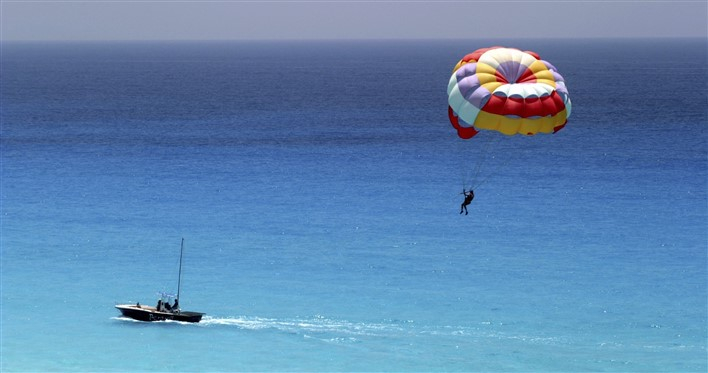

SURFING
Surfing is a surface water sport in which an individual, a surfer (or two in tandem surfing), uses a board to ride on the forward section, or face, of a moving wave of water, which usually carries the surfer towards the shore. Waves suitable for surfing are primarily found on ocean shores, but can also be found in standing waves in the open ocean, in lakes, in rivers in the form of a tidal bore, or in wave pools.
Learn More
JET SKILLING
Many of us likely had an introduction to the thrills of jet skiing whilst on holiday, but it’s not just the beaches of the Caribbean or some other exotic location that are the places to go. Jet skiing is a high speed water sport that is great for developing your balance and coordination skills as well as your leg muscles.
The Rushikonda project in Andhra Pradesh in 2022 was marked by several controversies and violations.[The New Indian Express 1][Eenadu 1] Initially, the Andhra Pradesh Tourism Development Corporation (APTDC) informed the AP High Court that the project covered a mere 9.88 acres. However, this assertion was contradicted by Google Earth imagery, raising questions about its accuracy.
Learn More

SWIMMING
Swimming is an individual or team racing sport that requires the use of one's entire body to move through water. The sport takes place in pools or open water (e.g., in a sea or lake). Competitive swimming is one of the most popular Olympic sports,[1] with varied distance events in butterfly, backstroke, breaststroke, freestyle, and individual medley.
Learn More
FLYBOARD FLYING
A Flyboard is a brand of hydroflighting device which supplies propulsion to drive the Flyboard into the air to perform a sport known as hydroflying.[1]
A Flyboard rider stands on a board connected by a long hose to a watercraft. Water is forced under pressure to a pair of boots with jet nozzles underneath which provide thrust for the rider to fly up to 22 m (72 ft) in the air or to dive headlong through the water down as far as one is willing to go.
Learn More

RAFT RODEO
Rafting and whitewater rafting are recreational outdoor activities which use an inflatable raft to navigate a river or other body of water. This is often done on whitewater or different degrees of rough water. Dealing with risk is often a part of the experience.
Learn More

PARASAILING
Parasailing, also known as parascending, paraskiing or parakiting, is a recreational kiting activity where a person is towed behind a vehicle while attached to a specially designed canopy wing that resembles a parachute, known as a parasail wing. The manned kite's moving anchor may be a car, truck, or boat.